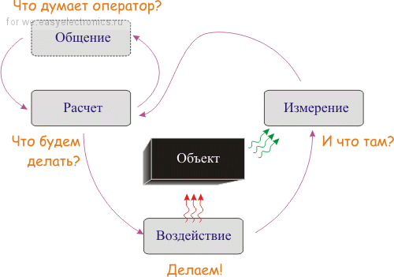
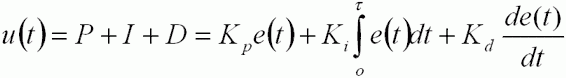
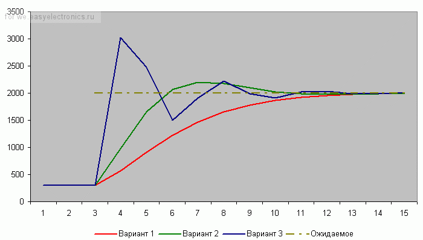
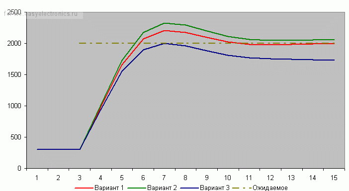
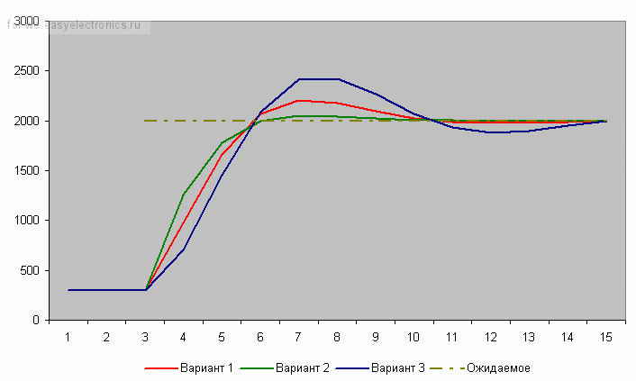
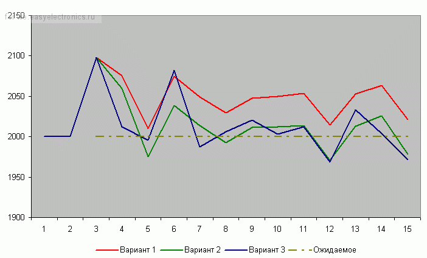
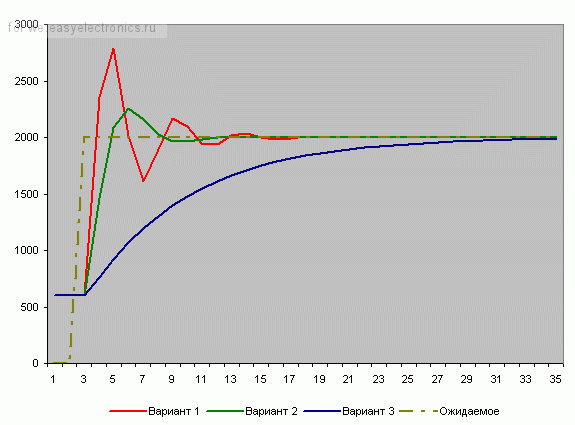

Обещал я недавно моему знакомому — хорошему электрику и чайнику в электронике — сделать небольшое устройство в автомобиль, которое, регулируя заслонку, будет поддерживать обороты в дОлжном состоянии (все подробности по авто-части к нему. Знаю, что назвали мы эту чучу умным словом «регулятор холостого хода»). Причем эти обороты должны зависеть от текущей температуры двигателя. «Так тебе нужно работать с ПИД-регулятором» — сказал я ему. А в ответ увидел туман в глазах, дым в ушах и дрожащий голос – «А это ничего общего со СПИДом не имеет???». В общем, придется ему объяснить подробности, при этом избегая математики. В Интернете море статей на эту тему. Моя статья – еще одна ложка в море информации.
Что мы делаем?
Итак, мы делаем регулятор холостого хода.
В данном случае однозначно просится к реализации система управления с обратной связью. В своей статье про «Датчики и АЦП» я рассказывал про систему управления с обратной связью, подробности ищите там. Также там была неплохая картинка на эту тему:

Что это будет в данном случае?
Мы хотим управлять оборотами двигателя в состоянии холостого хода. Для этого у нас есть шаговый двигатель, который открывает/закрывает заслонку для регулировки подачи воздуха. Также у нас есть таблица, которая указывает желаемую частоту двигателя в зависимости от текущей температуры. Управление объектом тут у нас выполняется шаговым двигателем. Состояние объекта определяется 1) оборотами двигателя и 2) текущей температурой.
Для данной картинки получаем следующее:
Итак, мы измерили все, что надо, и получили Обороты (t) — текущие обороты двигателя (текущего момента времени t), Температуру (t) — текущую температуру. Также у нас есть Шаг (t) — текущий шаг заслонки и Обороты (t+1) — новое значение оборотов двигателя, которое зависит от температуры. Получить нам в итоге надо Шаг (t+1) — новое положение заслонки.
Немного математики:
Шаг (t+1) = Функция { Шаг (t), Обороты (t), Температура (t), Обороты (t+1)}.
Что это за функция? Она выдает нам текущее значение шага, которое зависит от всего вышеперечисленного. Как она это делает?
Вся собака зарылась в том, что мы хотели на данный шаг получить одни обороты, а они в реальности совсем другие! Значит, нам нужно знать значение текущей ошибки (невязки), и она может быть вычислена как разность предполагаемых оборотов в будущем и текущих:
Ошибка (t) = Обороты (t+1) — Обороты (t).
В случае, когда обороты четко соответствуют требуемому значению (к чему мы и стремимся), ошибка будет равна нулю. Эта ошибка нам показывает насколько сильным должно быть воздействие.
Формула для следующего шага теперь может быть записана следующим образом:
Шаг (t+1) = Функция { Шаг (t), Ошибка (t)}.
Теперь можно вынести значение предыдущего шага за скобки:
Шаг (t+1) = Шаг (t) + Функция {Ошибка (t)}.
Все понятно? Мы на каждом шаге работы регулятора должны задавать текущее положение шагового двигателя. Он зависит, понятное дело, от предыдущего шага и от ошибки. Шаговый двигатель управляется смещениями, поэтому нам не так уж и важен текущий шаг (проигнорируем тему выхода за пределы допустимого количества шагов – моему другу электрику это знать не обязательно). В итоге можно перейти к такой записи:
ИзменениеШага (t+1) = Функция {Ошибка (t)}.
Во как все упростилось! В итоге мы пришли к загадочной функции, которая зависит от текущей ошибки. Что это за функция? Думаю, все уже догадались – это пропорционально-интегрально-дифференциальный регулятор.
Справедливости ради надо указать темы, которые мы проигнорировали (опять же – эти тонкости не для электриков!):
Формула ПИД-регулятора
Как я и обещал, формул тут не будет… ну, почти не будет. И этот раздел – как раз и будет формулой. Обещаю – больше формул не будет! Так что потерпите!
Итак, формула ПИД-регулятора:

Тут у нас следующие буковки (разъясним чуть ниже):
Все, расслабились – больше эта формула нам в работе не понадобится, она для пояснения сути.
А суть тут такая.
У нас есть воздействие, наша Функция (u (t) ). Она состоит из трех составляющих – Пропорциональной, Интегральной и Дифференциальной (отсюда и ПИД-регулятор).
Формула в вышеприведенном виде хороша для изучения, но неудобна для расчетов (хотя бы потому, что в вычислительной технике надо переходить к численным методам). В программной реализации, если верить этой статье, переходят к дискретной реализации:
u(t) = P (t) + I (t) + D (t);
P (t) = Kp * e (t);
I (t) = I (t — 1) + Ki * e (t);
D (t) = Kd * {e (t) — e (t — 1)};
Вот это уже выглядит куда реальнее и понятнее! Мы вычисляем сумму трех составляющих. Каждая из них определяется своими коэффициентами. Если данный коэффициент нулевой, то составляющая в вычислении не участвует. С этой формулой мы и будем работать далее, ее я и реализую.
Впрочем, есть еще и другая, рекуррентная реализация:
u(t) = u(t — 1) + P (t) + I (t) + D (t);
P (t) = Kp * {e (t) — e (t — 1)};
I (t) = I * e (t);
D (t) = Kd * {e (t) — 2 * e (t — 1) + e (t — 2)};
Какая из них лучше/правильней? Математика, в общем-то, одинаковая. Коэффициенты тоже. Говорят, что есть разные подводные булыжники при реализации.
Обратите внимание! Коэффициенты тут – обязательно дробные числа! В языке программирования Си – как минимум float, а лучше бы и double.
Вся магия ПИД-регуляторов – именно в этих коэффициентах. Как их подбирать – посмотрим в конце. А сейчас переведем дух от математики и поедем к изучению поведения этой формулы.
Все расчеты и моделирование я проводил на модели в Excel. Он – файл – приложен внизу, с ним можно поиграться самостоятельно. Модель – сугубо для ознакомления с идеей! Т. е. не надо ее стараться привести к какому-то реальному процессу, искать в ней научный смысл и т. п. Там все цифры слегка «отфонарные». Но зато и файл простенький и несложный. И моделируется быстро. И дает возможность понять суть ПИД-регулятора. Пару слов по файлу я дам в конце.
Пропорциональная составляющая
Первый коэффициент – пропорциональный. Он самый очевидный и понятный (реально я когда-то давно сам вывел формулу ПИД-регулятора, кому-то показал, и он рассказал мне об этой теории; так вот, вывод я начал с пропорционального вида).
Рассмотрим его – пропорционального коэффициента — влияние на результат.

«Ожидаемое» – это то, что мы хотим получить. Вначале оно равно какому-то низкому значению (в нашем примере – это те обороты двигателя, которые создает стартер). Далее, в момент времени 3, оно вдруг стало равно 2000 (завели мотор и, исходя из текущей температуры, мы должны получить 2000 оборотов в минуту).
(Небольшая ремарка – в автомобилях частоту измеряют в кол-во оборотов в минуту!)
Сделаем первый вариант: Kp = 2. Посмотрим на красную линию. Что мы видим? По ходу дела обороты начали расти – ошибка стала снижаться – значение коррекции постепенно растет — красная линия растет (обороты двигателя увеличиваются). В какой-то момент (почему-то 13-ый) обороты достигают требуемой величины. Класс? Супер! Да вот только медленно как-то…
Попробуем другой коэффициент: Kp = 5. Что видим? Зеленая линия. Достигла результата шустро – на 6-ом шаге. Класс! Да вот – ой! – перелет (по науке перерегулирование). Потом, правда, вернулись назад – порядок.
А что если коэффициент сделать еще больше? Kp = 20. Синяя линия – бух! За один шаг! Но – сразу перелет. Потом падаем вниз – ошибка стала отрицательной. Опять сильно вниз! Рывок вверх! Опять вниз! Что видим? Пошли колебания. Они, слава Богу, затухающие.
Если увеличивать коэффициент больше, то такие колебания могут стать незатухающими. Система начнет колебаться все больше и больше, пока не … ну-у, тут уже все зависит от конкретной системы.
Какова природа колебаний? Система, на которую воздействуют, всегда (в реальной жизни) инерционна. Обороты повышаются – коэффициент падает к нулю. И вот – достигли нужной точки. Коэффициент ошибки (и регулирования) достиг нуля. Но ведь процесс поднятия оборотов инерционен! Движёк раскочегарен, обороты продолжают по инерции расти. И тогда будем двигать заслону назад – опускать обороты. Опять достигли нуля – а обороты продолжают падать… И так, в общем-то, до бесконечности.
Особенно это очевидно в системах поддержания температуры. Нагрев надо выключать до нужной температуры – чтобы сам нагреватель перестал разогреваться и греть объект.
Для решения этой проблемы используется следующая –
Интегральная составляющая
Эта составляющая накапливает ошибку (как и любой интегратор). Т. е. постепенно накапливается эта самая ошибка, интегратор «наполняется» и его воздействие увеличивается. Эффект от такого накопления не мгновенен — ибо ошибка должна накопиться, на что уходит некоторое количество шагов алгоритма.
Рассмотрим случай, когда Kp = 5, а Ki будем менять:

Вариант 1 (красный) – Ki = 0.
Вариант 2 (зеленый) – Ki = 0.2.
Вариант 3 (синий) – Ki = -0.3.
Использование положительного коэффициента (зеленая линия) в данном случае, пожалуй, ничего нам не дало. А вот отрицательный коэффициент (синяя линия) очень даже неплохо помог! Но вот только линяя пошла вниз, и потом она приведет к раскачиванию системы… (но на практике раскачивания системы, как правило, не происходит, т. к. постоянно будут коррекции текущего состояния)
Итак, интегральная составляющая позволила нам сгладить резкий эффект пропорциональной составляющей. Это неплохо!
Но вы погодите – сейчас нам покажет всю свою мощь
Дифференциальная составляющая
Эта составляющая пропорциональна темпу изменений. Как подсказали в комментариях, она «придает ускорение».
Как и ранее, Kp = 5, а Kd будем менять:

Вариант 1 (красный) – Kd = 0.
Вариант 2 (зеленый) – Kd = 0.2.
Вариант 3 (синий) – Kd = -0.2.
Каково? И сглаживает, и не дает раскачиваться в будущем!
Реакция на помехи
Надо еще не забывать об одной такой малоприятной вещи – о помехах. Они будут раскачивать лодку нашей системы.
Вот картинка, когда у нас стоит задача поддерживать одно и то же значение оборотов:

Шумовое (случайное) воздействие – одинаковое для всех вариантов.
Вариант 1 (красный) – Kp = 10, Ki = 0, Kd = 10.
Вариант 2 (зеленый) – Kp = 10, Ki = 2, Kd = 0.
Вариант 3 (синий) – Kp = 10, Ki = 2, Kd = 6.
Как видно, с добавлением составляющих стабильность (немного) увеличивается.
Настройка
Я думаю, общее представление о формуле ПИД-регулирования вы получили. Программируется легко, эффект красивый. И следующий вопрос у вас будет – «а как получит коэффициенты»? И вот тут все становится кисло… Потому что, если до этих пор шла строгая математика, то дальше начинаются танцы с бубнами, шаманство и шайтанство. Нет, все-таки есть какие-то точные методы, но мне становится плохо при мысли, что я должен это проделать для своего двигателя в автомобиле!
В комментариях мой метод (и мое понимание) настройки разгромили, закопали и затоптали. И порекомендовали прочитать хорошую книгу «ТЕОРИЯ АВТОМАТИЧЕСКОГО УПРАВЛЕНИЯ ДЛЯ «ЧАЙНИКОВ»» К.Ю. Полякова (созвучное название, не находите?). Согласен, тема (настройки) сложная, для меня неоднозначная, поэтому соглашусь с комментирующими — надо прочитать эту книгу и глубже вникать в тему. Но… это уже будет не для уровня чайников, не так ли? В книге Полякова формул более чем достаточно, а это уже уровень электро-чайника! Так что позвольте мне изложить свой подход. Неидеальный, но достаточный для старта и более детального изучения темы.
Прежде всего, вы должны иметь четкое представление о своей системе регулирования – насколько она инерционна? какие шумы на нее могут воздействовать? какие воздействия (результаты функции ПИД-регулятора) для нее недопустимы?
Следующий вопрос – насколько вашу систему можно погонять туды-сюды? Все методы, что я нашел, базируются на тестовых воздействиях на систему и анализе результатов. Нужно пробовать, пробовать, считать, считать, считать (ну или по науке — строить модель)… А температура двигателя-то растет, и воздействие через полчаса работы уже будет совсем не таким, как при начале. А как вы в один и тот же день проверите работу при -30оС и +30оС???
Вот несколько полезных советов оттуда же:
Впрочем, несколько обнадеживает информация из другой статьи: «ПИД-регуляторы замечательны тем, что для их хорошей настройки не требуется отличного понимания формальной теории управления системами. При этом они позволяют решить около 90% всех задач управления простыми системами замкнутого цикла.»
Там же описана процедура настройки. Рекомендую почитать — просто и со вкусом.
Мой же подход базируется на следующем.
Частота опроса/воздействия
Есть очень важный момент работы при разработке ПИД-регулятора: воздействие должно быть строго периодичным, т. е. производиться через равные промежутки времени! Аналогично, ошибка должна вычисляться также периодически.
Какой должен быть период измерений/воздействий? Для начала определите время стабилизации системы – за сколько должно быть достигнуто устойчивое состояние (в случае регулятора холостого хода хватит периода 0.5 секунды). Потом разделите это время на 10 … 100 – и вы получите длительность шага (в моем случае хватит и 10 мсек). А вообще – чем выше частота, тем лучше! Но надо помнить, что операции с дробными числами весьма медленны. Фактически, они и зададут вам период работы.
Посмотрим, как период опроса (и воздействия) влияет на качество результата:

Коэффициенты ПИД-регулятора: – Kp = 10, Ki = 0, Kd = 0.
Вариант 1 (красный) – период опроса 0.5 у.е.
Вариант 2 (зеленый) – период опроса 0.35 у.е.
Вариант 3 (синий) – период опроса 0.15 у.е.
Как видим, в первом случае есть мощные выбросы. Во втором случае (70% от первого периода) они стали слабее, а в третьем (30%) – преобразование вообще получилось гладким! Т. е. для первых двух вариантов нужны дополнительно интегральная или дифференциальная составляющие, а для последнего мы обошлись только пропорциональной. А это существенная разница в вычислениях!
Так что вопросу выбора периода надо уделить первостепенное внимание.
Итак, время выбрали, все коэффициенты сбросили в ноль. Начинаем управлять системой.
Идеально, если вы сможете собрать статистику – записывать воздействие/результат/сопутствующую информацию в текстовый файл. Потом его можно открыть в том же Excel и проанализировать.
Настройка пропорционального коэффициента Kp
Для начала я устанавливаю коэффициент Kp в 1 и смотрю, что будет. Растет слишком медленно – увеличиваю. В какой-то момент начнутся перелеты и колебания. Значит, многовато – уменьшаем. Исчезли – немного увеличиваем. Начались – немного уменьшаем. Исчезли — … И так далее, пока не надоест. В итоге получили достаточно устойчивый пропорциональный регулятор, который надо немного скорректировать (надо ли? Если все работает вполне качественно, то не морочим себе голову и считаем, что все настроено)
Настройка дифференциального коэффициента Kd
Понемногу наращиваю коэффициент Kd — 0.5, 1,… Колебания системы уменьшаются, все работает красивее… Пока не происходит обратное – начинаются мощные выбросы. Все, перерегулировали, уменьшаем.
Итак, имеем выбросы – уже меньше, но все равно имеем. Самое то сгладить, притормозить воздействие!
Настройка интегрально го коэффициента Ki
Шаманим дальше. Берем совсем немного – 0.1 для начала. Можно попробовать и небольшое отрицательное значение. Смотрим, пробуем, крутим…
Процесс этот – настройки – итерационный. Стоит пробовать разные варианты, начинать сначала. Для меня он по-прежнему туманен и шайтанен.
Дополнительные модули?
Построили, сделали — и увидели, что все равно есть какие-то биения, ненужные колебания. Ну-с, а что вы хотели??? Серьезный подход изобилует формулами, сложными расчетами!
И Бог с ними — вот что я скажу! Можно вполне на выходе добавить усреднение нескольких последних тактов — дешево (в плане расчетов) и сердито (в плане стабильности воздействий). Можно поставить еще какие-нибудь фильтры.
Не будем догматичными! Кто сказал, что нужно ограничиться одним лишь ПИД-регулятором?
Информация по модели
А теперь – обещанная пара слов по Excel-файлу. В нем реализована модель, схожая с перемещением по линии. Не очень корректная, возможно, но вполне достаточная для старта (может, по результатам обсуждения сделаю более точную модель — возьму для примера модель электродвигателя из статьи Полякова). Есть предыдущее положение, скорость и ускорение. Скорость рассчитывается как разница предыдущих перемещений. Ускорение определяется как П-И-Д – воздействие, умноженное на коэффициент усиления (в верхней части таблицы).
В таблице представлены 3 варианта. Они настраиваются сверху:
Результат моделирования – 2 графика. Первый – маленький – показывает несколько значений вначале. Второй показывает всю таблицу.
Попробуйте поменять в этом файле коэффициенты – результат будет сразу виден. По ходу дела вы сами заметите закономерности, о которых тут написано (и выведете свои новые).
В заключение – о реализации
С теорией вроде бы разобрались. Теперь – о реализации.
Сердце регулятора – формула. Она оперирует с дробными числами. Учтите, что такие операции и на 32-хбитным контроллерах выполняются не моментально, что тут говорить о 8-битках! Вычисление отдельных частей формулы – П-, И-, Д- — лучше написать не одной строкой на Cи, а разбить на части. И делать между ними что-нибудь полезное.
(ну… все не так трагично. У меня на ATMega в Cv AVR2 с 8 МГц кварцем формула просчиталась за 0.18мсек. Для моих нужд — с головой!)
И еще не забываем ограничивать воздействие допустимыми пределами! Иначе можно что-нибудь угробить!
И учитываем периодичность измерения/воздействия.
UPD: кстати, насчет «периодичности» и временнЫх режимов.
Если вы реализуете свой алгоритм с помощью операционной системы реального времени, то там разумное учесть следующее:
Я использую такой алгоритм:
enum PIDstep {ReceivingE, ComputeP, ComputeI, ComputeD, MakeAction}; // тип данных «итерация вычислений»
struct Timer {...}; // структура для часов реального времени
struct difTimer {...}; // структура для разницы времени
void PIDregulating (void)
{
static char is_first_call = 1;
static float U, I, Kp, Ki, Kd, E, Eprev;
static PIDstep PID_step;
static struct Timer next_measuring, next_action;
static struct difTimer next_PID_step;
// . инициализация
if (is_first_call)
{
is_first_call = 0;
I = 0;
Eprev = 0;
PID_step = ReceivingE;
// ... инициализация коэффициентов Kp, Ki, Kd
SetCurrentTime (&next_measuring);
SetCurrentTime (&next_action);
// ... задание смещения next_PID_step
}
switch (PID_step)
{
case ReceivingE: // получение текущей ошибки
if (TimeIsLower (&next_measuring))
break; // время для измерения не подошло
AddTime (&next_measuring, &next_PID_step);
E = ReceivingE ();
U = 0;
case ComputeI: // вычисление интегрального коэф.
PID_step = ComputeP;
if (Ki)
{
U = I + Ki * E;
I = U;
break;
}
case ComputeP: // вычисление пропорционального коэф.
PID_step = ComputeD;
if (Kp)
{
U += Kp * E;
break;
}
case ComputeD: // вычисление дифференциального коэф.
PID_step = MakeAction;
if (Kd)
{
U += Kd * (E - Eprev);
Eprev = E;
break;
}
case MakeAction: // воздействие
CheckU (&U); // проверка корректности U
if (TimeIsLower (&next_action))
break; // время для воздействия не подошло
AddTime (&next_action, &next_PID_step);
MakeAction (U); // воздействие U
PID_step = ReceivingE;
break;
}
}
Как видите – ничего революционного!
Прежде всего, все радости происходят в отдельной функции, которая вызывается периодически.
Первый вызов – инициализация из EEPROM или откуда-нибудь еще коэффициенты, обнуляем переменные для рекурсивных вызовов. Потом начинаем пошагово 1) измерять, 2) вычислять, 3) воздействовать, и так по кругу. Заодно производится привязка к реальному времени. Если текущее время меньше требуемого (функция TimeIsLower), то действие не производится.
В комментариях поинтересовались — зачем такие сложности с машиной состояний? С недетерминированным алгоритмом? Отвечаю: благодаря такому подходу я реализую простенький «параллелизм». Т. е. в промежутке между этапами вычислений я делаю какие-то другие действия (в моем случае общение по UART, которое может быть весьма напряженным — когда я использую сий девайс как логгер событий).